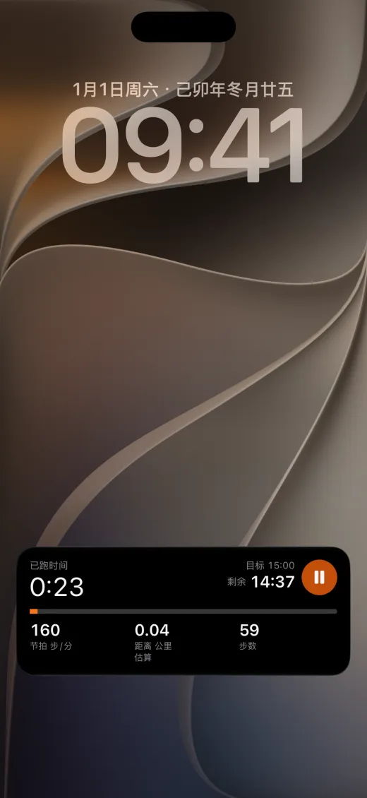
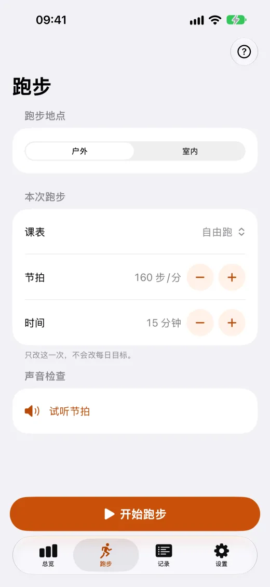
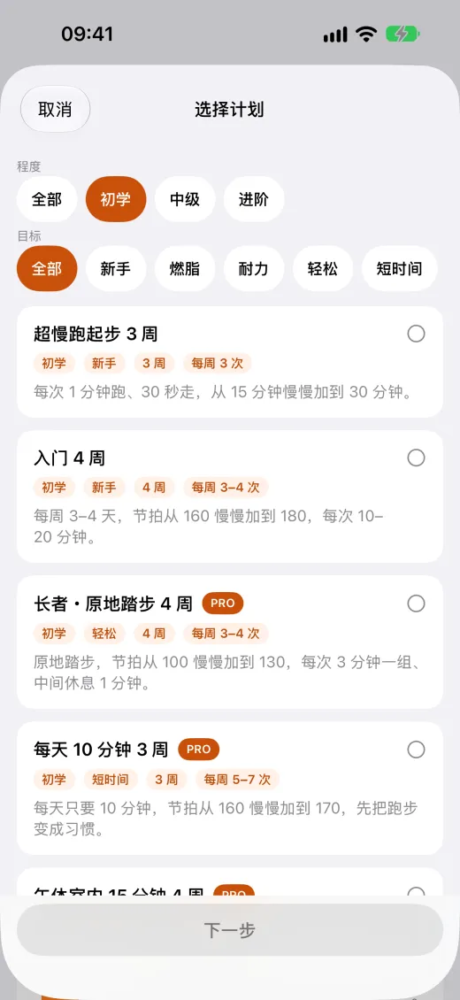
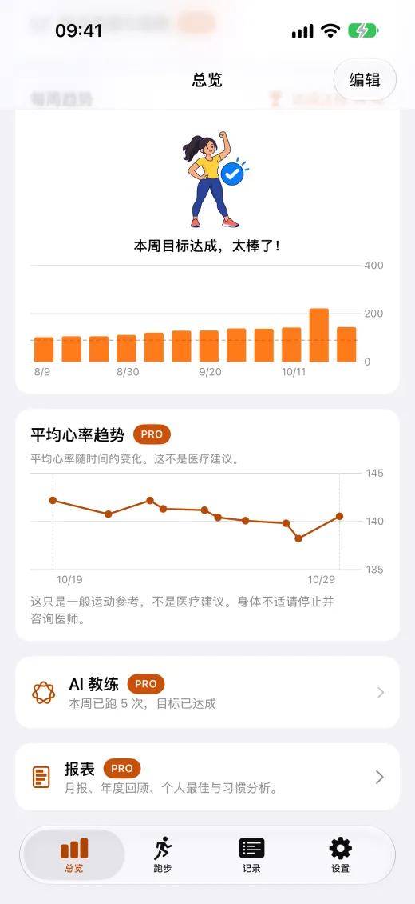
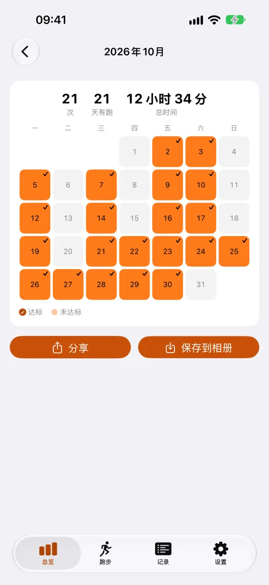

节拍器
160–180 步/分，声音与手腕振动，锁屏也不中断。

课表与计划
免费的 4 周入门计划，分段课表自动换段提示。

Apple Watch
直接在手表上开始跑步，心率上限提醒。

健康数据留在你的设备
不用注册账号，健康数据不上传、也不用于广告。
实际画面





免费与 Pro
Pro 是一次购买、永久使用、支持家人共享，不是订阅。
免费
- 节拍器：160–180 步/分，声音或手腕振动，锁屏也能继续
- 跑步计划：超慢跑起步 3 周、入门 4 周
- 分段课表：免费 1 组自定义与 2 个入门模板
- Apple Watch 版：直接在手表上开始跑步
- 锁屏、灵动岛与小组件实时显示进度
Pro
- 课表库全部 10 种课表，以及不限数量的自定义课表
- 更多跑步计划：9 周连续 30 分钟、每周 150 分钟、进阶 300 分钟
- 跑步数据与趋势、月报与年度回顾、CSV / PDF 导出
- iCloud 同步：换手机也不会丢失记录
- 移除记录页广告